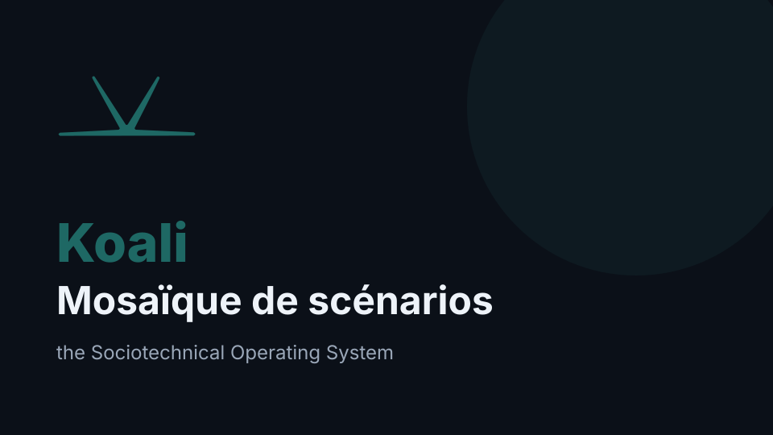

Mosaïque de scénarios Koali · 120 scénarios
Explorez 120 façons d’utiliser Koali
Survolez une cellule pour découvrir une situation concrète et son profil public.
TrouverComprendreApprendreCollaborerChoisirAgirRépondreSe souvenir
Lire le scénario →Trouver et comprendreApprendre et transmettreCollaborer et créerChoisir et gouvernerOrganiser et agirRépondre et coordonnerSe souvenir et améliorerDiffuser et rejoindre le public
Les noms des territoires vivent dans la carte. Survolez ou ciblez un hexagone pour examiner un scénario ci-dessus.